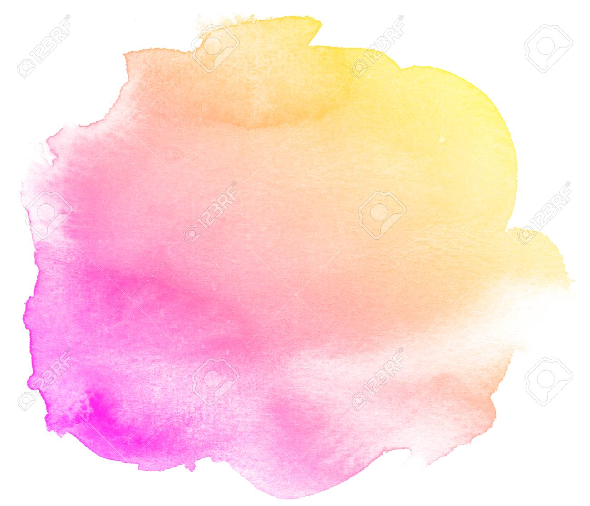
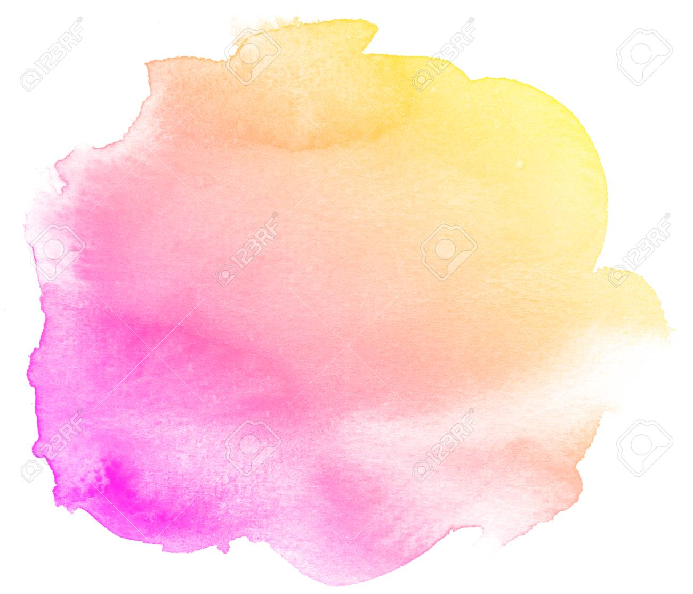

Hello! My name is Kuhoo Srivastava. My birthday was on April 19th when I turned 10, double digits, and above you can see some photos from my 10th birthday. I live with my mom and dad, and I am the only child. I currently don't own any pets, but I really want one. I was born in India but I came to the USA when I was 6 months old.
.jpg)
I enjoy doing many things during my free time. I absolutley love to read, especially fiction books filled with mystery, adventure, action, and sometimes a little bit of drama. Something else I love to do is make art, especially sketches. Another thing I like to do is to write. I have written many short stories and a couple chapter books. I also enjoy dancing, and I have learned the indian classical dance Kathak before and done multiple stage performances as well. I start dancing when I was 3 years old and I have been dancing since, and of course, I LOVE to code, and it has always been my dream to do so!
 

Now I will tell you a few more things about myself. My favorite color is yellow and I also like the color pink very much. I prefer warmer shades and for colors like green, blue, and purple I usually like lighter tones such as lavender. My most favorite food in the world is okra. If you ask me about my favorite animal, it would be hard to decide since I pretty much like all animals except inscets, mites, bugs, spiders, alligators, snakes and other creepy creatures. My favorite season is spring, which I would enjoy more if it had not been for pollen allergies. My favorite TV shows are Sweet Tooth and Manifest. I love the Disney princesses, and my favorites are Belle and Rapunzel. Another thing I would like to add is that my favorite name and flower is the beautiful rose! One more thing is that since I love to read books, my favorite authors are Rick Riordan and Erin Hunter. My favorite book series by both authors is Percy Jackson by Rick Riordan and Warriors by Erin Hunter.